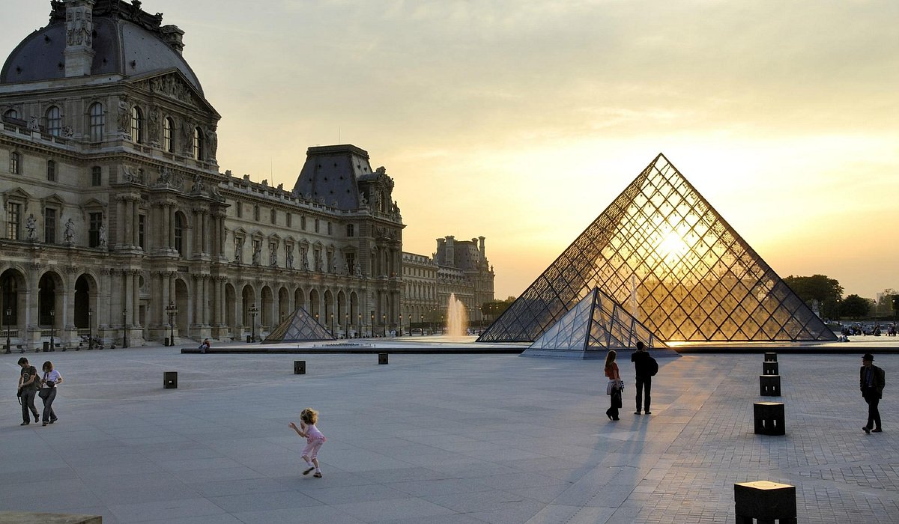
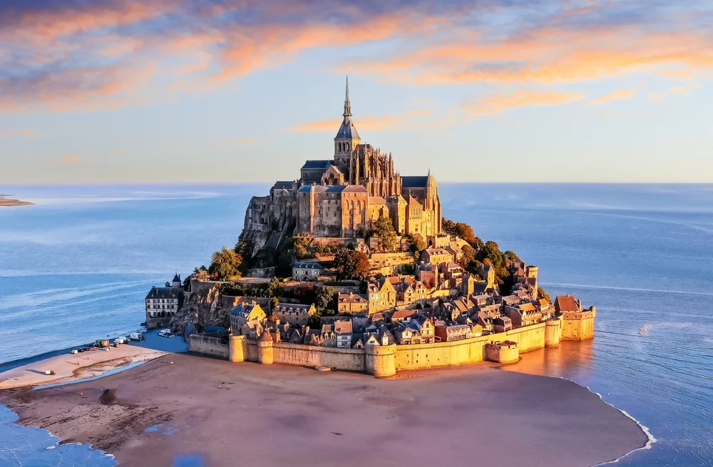
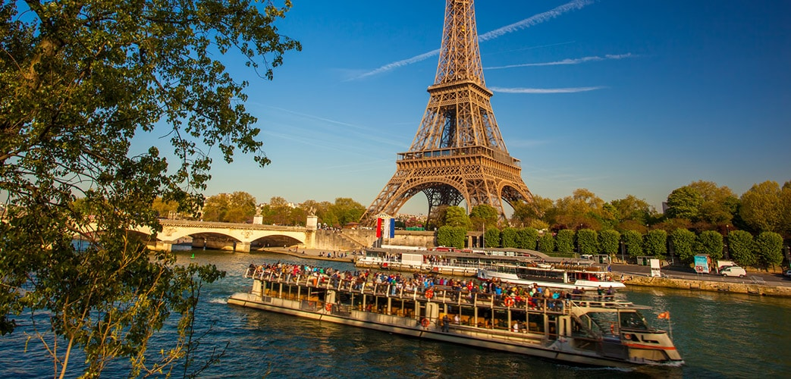
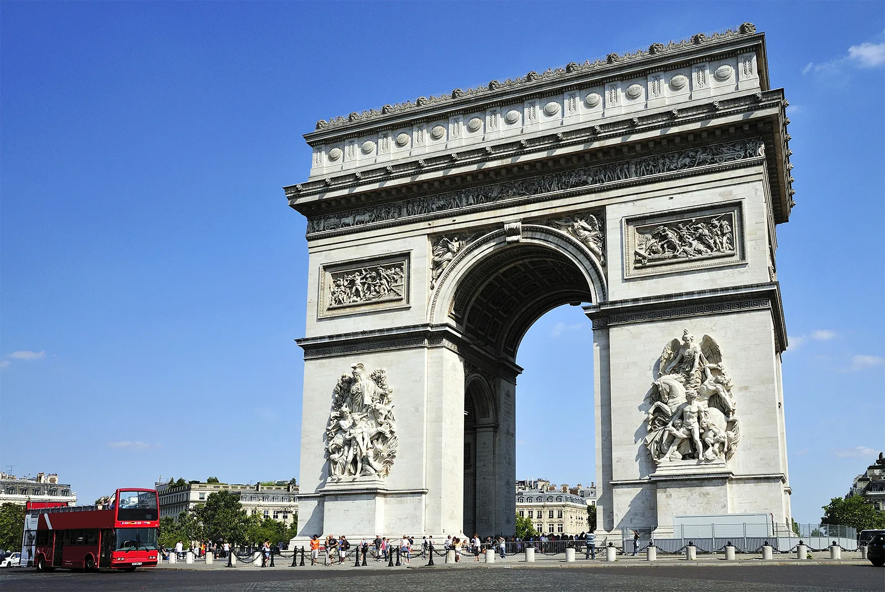

Paris
Paris is the capital city of France and one of the most famous cities in the world. It is known for its art, fashion, culture, and historic landmarks. Often called the City of Light, Paris attracts millions of tourists every year.
History
Paris has a long and rich history that dates back more than 2,000 years. It developed from a small settlement into a major European center for culture, politics, and commerce. The city played an important role in the French Revolution and continues to be a global cultural hub.
Culture
Paris is famous for its museums, art galleries, and architecture. The city is also known for fashion, cuisine, and romantic atmosphere. Many world-famous artists, designers, and writers have lived and worked in Paris.
Tourism
Tourism is a major part of the Paris economy. Visitors come to see historic monuments, beautiful streets, luxury shopping areas, and cultural attractions.
Famous Places
Some of the most popular attractions in Paris include the Eiffel Tower, Louvre Museum, Notre-Dame Cathedral, Champs-Élysées, and Montmartre. These places make Paris one of the most visited cities in the world.
Gallery





Paris
| Country | France |
| Region | Île-de-France |
| Founded | 3rd century BC |
| Population | 2.1 Million+ |
| Nickname | City of Light |
| Famous For | Art, Fashion, Eiffel Tower |